Heterogeneous Transition Network Analysis (HTNA) studies sequences in
which two or more actors interleave – a learner and a tutor, a human and
an AI, a clinician and a patient – and treats each actor’s codes as a
distinct node group. The htna package builds the network,
computes the usual analytical quantities, and renders the result with
the actor partition baked into colour, layout, and the legend.
1. Building a heterogeneous network
Start from one long-format data frame with an actor-type column
tagging each row ("Human" or "AI") and pass
its name as actor_type to build_htna(). The
result is a network whose nodes carry the actor label they came from.
The bundled human_ai corpus (see ?human_ai) is
used throughout this vignette.
library(htna)
data(human_ai)
net <- build_htna(human_ai, actor_type = "actor_type")2. Plotting the network
plot_htna() lays out actor groups around the circle,
colours each node by its actor type, and draws the actor legend below
the plot:
plot_htna(net)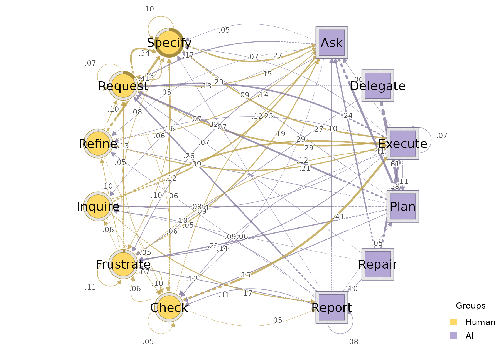
3. Per-actor sequence plots
sequence_plot_htna() shows the temporal structure of the
sessions. With by = "state" (the default) each cell is
coloured by its code; with by = "group" cells are coloured
by actor type. type selects the layout:
"index" repreents the index plot, "heatmap"
collapses across sessions into a single carpet, and
"distribution" shows the sequence distribution plot with
the state composition per timepoint as a stacked area.
sequence_plot_htna(net, by = "state", type = "index")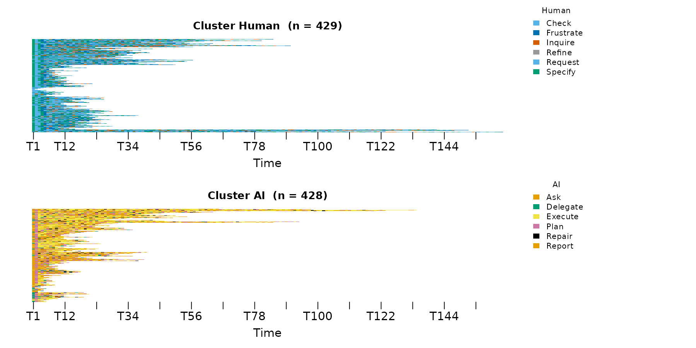
sequence_plot_htna(net, by = "state", type = "heatmap")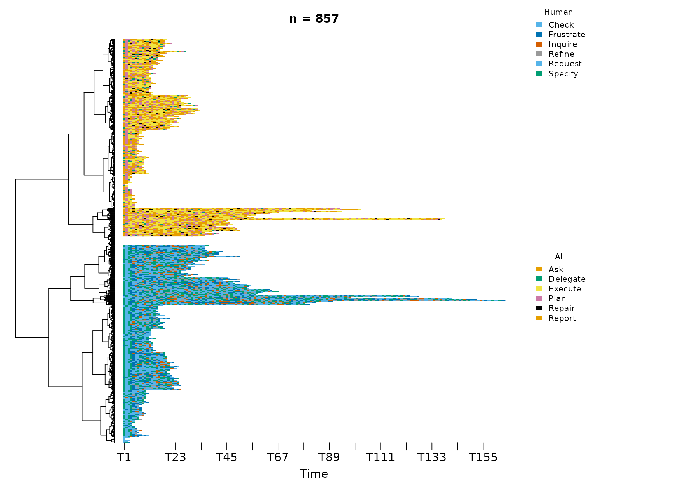
sequence_plot_htna(net, by = "group", type = "distribution", na_color = "white")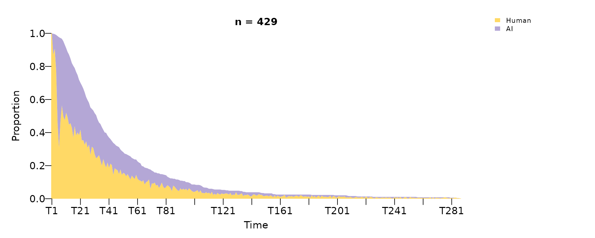
When by = "state", the legend is split into one block
per actor type with the actor type name above each block, so the reader
can tell at a glance which codes belong to which actor type.
4. Centralities
centralities_htna() calculates per-node centrality
measure: one row per node, one column per measure, defaulting to nine
standard measures (out/in strength, in/out closeness, closeness,
betweenness, RSP betweenness, diffusion, clustering). The
measures = c(...) argument can be used to specify a
different set of measures
centralities_htna(net)
#> node actor OutStrength InStrength ClosenessIn ClosenessOut Closeness
#> 1 Ask AI 0.9817642 1.5266008 0.012587425 0.006192077 0.01670617
#> 2 Check Human 0.9499230 0.7522288 0.008035193 0.006492281 0.01340661
#> 3 Delegate AI 1.0000000 0.1740318 0.003015314 0.007567519 0.01315340
#> 4 Execute AI 0.9256198 2.0338718 0.016720393 0.006367002 0.01784416
#> 5 Frustrate Human 0.8861885 0.9672100 0.010511066 0.006322199 0.01169411
#> 6 Inquire Human 0.9671362 0.5147284 0.006592669 0.007311931 0.01399616
#> 7 Plan AI 0.9967742 1.2496499 0.012325008 0.006926899 0.01675952
#> 8 Refine Human 1.0000000 0.4703420 0.005943026 0.006143417 0.01250189
#> 9 Repair AI 0.9960474 0.1995057 0.002655997 0.007958047 0.01404200
#> 10 Report AI 0.9225146 0.5246300 0.005125410 0.007099789 0.01180054
#> 11 Request Human 0.9329032 1.6926517 0.016089323 0.005980693 0.01812498
#> 12 Specify Human 0.8991424 1.3525625 0.013064153 0.006197358 0.01619607
#> Betweenness BetweennessRSP Diffusion Clustering
#> 1 13 91 8.778380 0.1543463
#> 2 0 42 8.354335 0.2074548
#> 3 0 3 9.003808 0.1868121
#> 4 29 118 8.186741 0.1359230
#> 5 2 61 7.948727 0.2014196
#> 6 14 27 8.615216 0.1703483
#> 7 25 63 8.715568 0.1531488
#> 8 0 23 8.751161 0.2393259
#> 9 0 1 8.852837 0.2039989
#> 10 0 17 8.186046 0.1557107
#> 11 19 110 8.181829 0.1842378
#> 12 15 88 8.008017 0.2112340To plot centralities, the plot_centralities() function
can be used. Each panel is one measure; bars are coloured per state by
default, or by actor type with by = "group":
plot_centralities(net, by = "state")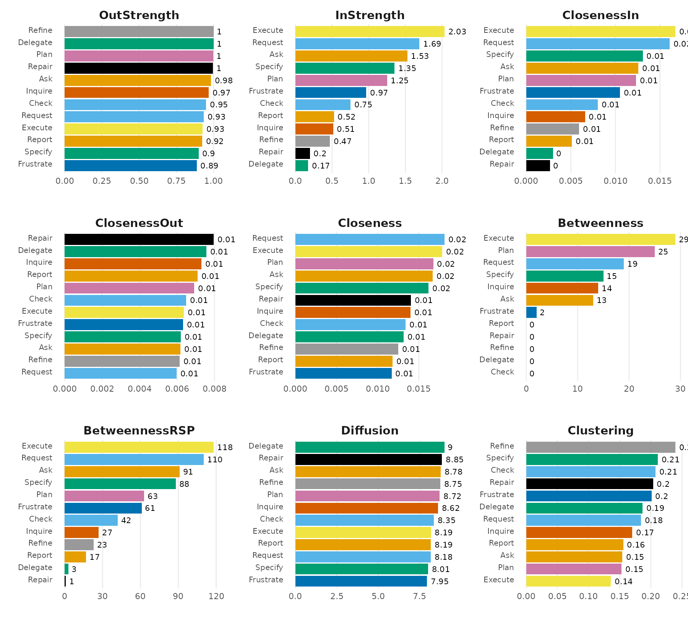
plot_centralities(net, by = "group")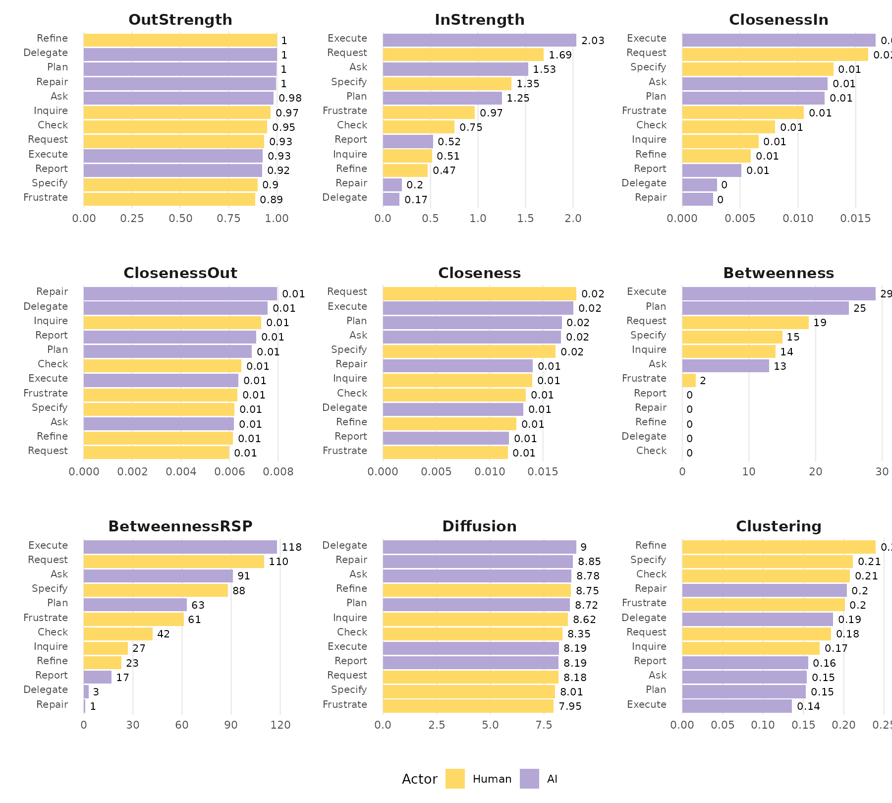
5. Bootstrap
To validate which transitions of an HTNA model are stable,
bootstrap_htna() resamples sessions to obtain edge-weight
stability and per-edge p-values. The plot_htna_bootstrap()
plots the resampled network with confidence intervals and a
non-significant/significant edge style. The argument
display = "significant" shows also non-significant
edges.
boot <- bootstrap_htna(net)
plot_htna_bootstrap(boot)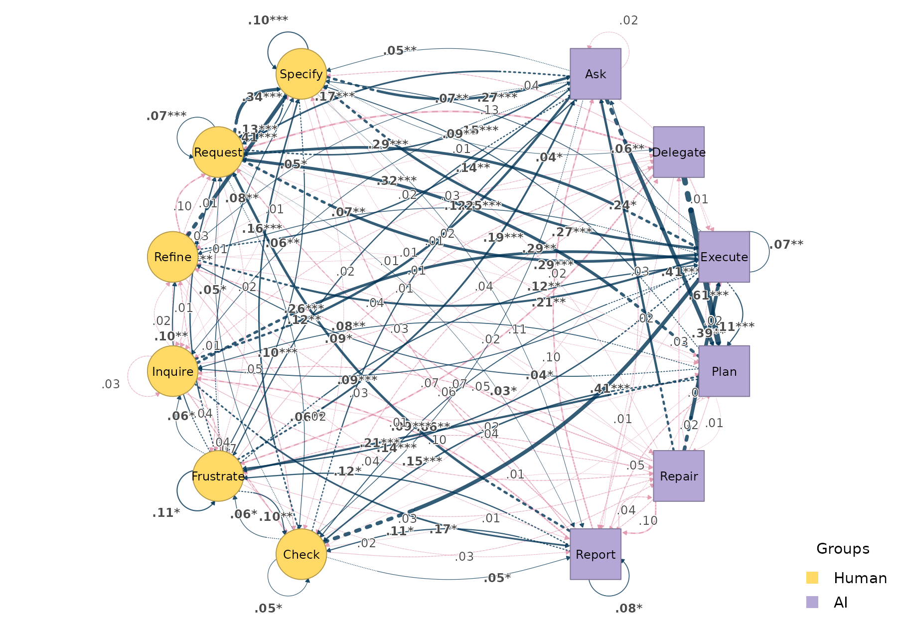
plot_htna_bootstrap(boot, display = "significant")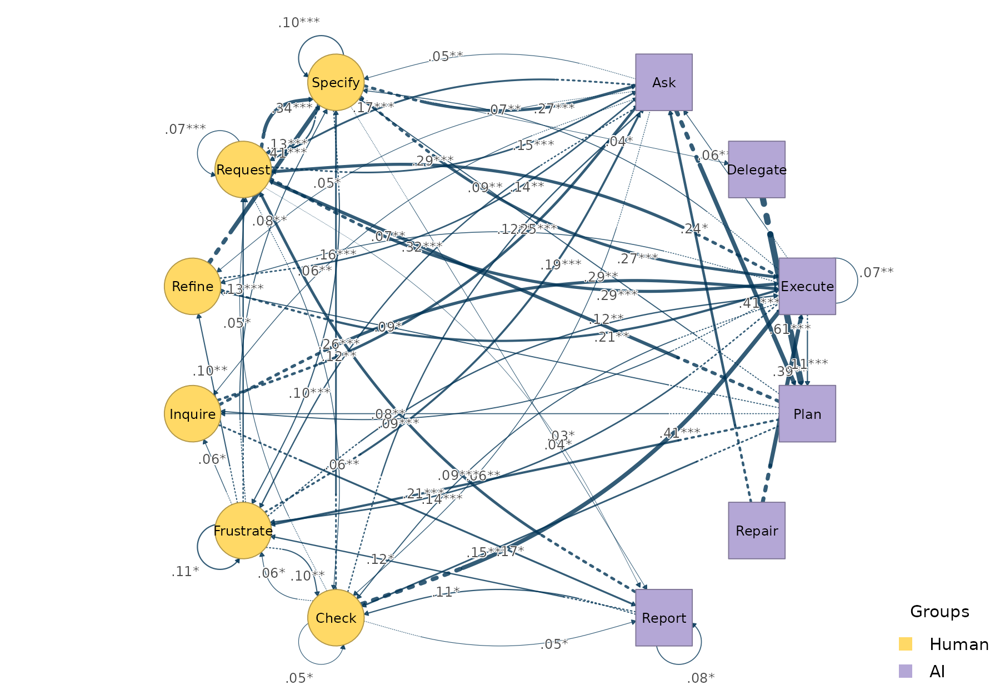
6. Centrality stability
The function centrality_stability_htna() runs a
case-dropping centrality stability check: drops a proportion of the
sessions, recomputes the centralities, and measures how strongly the
dropped-sample centralities correlate with the originals. The returned
cs value per measure is the largest drop proportion
at which the correlation with the original centralities still meets the
threshold (default 0.7) for at least
certainty (default 0.95) of resamples — values
above ~0.5 are typically considered stable.
cs <- centrality_stability_htna(net, iter = 100, seed = 1)
cs$cs
#> InStrength OutStrength Betweenness
#> 0.9 0.9 0.9By default the check covers InStrength,
OutStrength, and Betweenness — the three
measures whose values are bit-equal between htna’s cograph
engine and the reference implementation.
7. Split-half reliability
The function reliability_htna() reports how stable each
edge weight is under random split-half resampling: it draws
iter random splits of the sessions, builds a network on
each half, and summarises the agreement (mean / median / max absolute
deviation, plus correlation) between paired half-networks.
rel <- reliability_htna(net, iter = 100, seed = 1)
rel$summary
#> model metric mean sd
#> 1 relative mean_dev 0.012458419 0.0011464861
#> 2 relative median_dev 0.007500373 0.0008826226
#> 3 relative cor 0.982010309 0.0049162608
#> 4 relative max_dev 0.098166765 0.03128369648. Comparing two networks
Given two HTNA networks built over the same node set,
plot_htna_diff() draws the edge-level pairwise difference.
Positive differences are green, negative red.
For example, we compare early vs. late sessions:
sess_start <- aggregate(session_date ~ session_id, data = human_ai,
FUN = min)
sess_start <- sess_start[order(sess_start$session_date,
sess_start$session_id), ]
half <- nrow(sess_start) %/% 2L
early_sess <- sess_start$session_id[seq_len(half)]
early <- build_htna(human_ai[human_ai$session_id %in% early_sess, ],
actor_type = "actor_type")
late <- build_htna(human_ai[!human_ai$session_id %in% early_sess, ],
actor_type = "actor_type")
plot_htna_diff(early, late)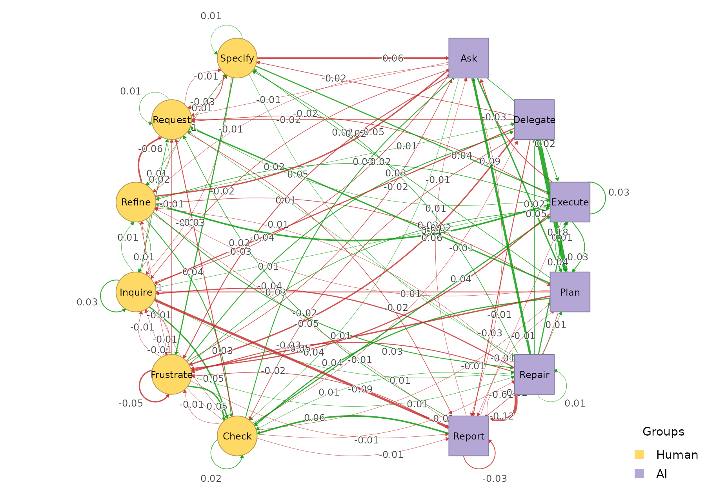
9. Permutation test
The function permutation_htna() provides a
non-parametric significance test on each edge weight difference. Pass
the result to plot_htna_diff() to render significant
differences with the pos/neg colouring above; non-significant edges are
dashed grey when show_nonsig = TRUE.
perm <- permutation_htna(early, late, iter = 200)
plot_htna_diff(perm)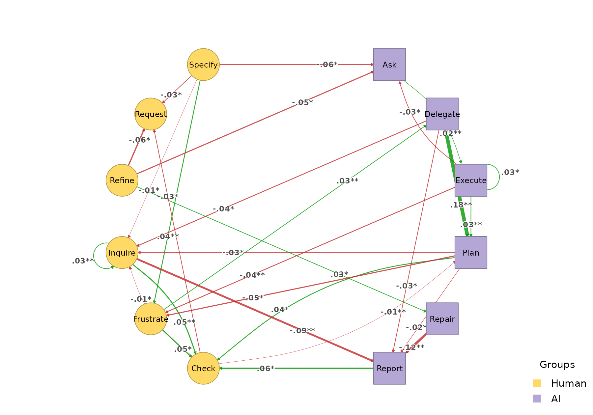
plot_htna_diff(perm, show_nonsig = TRUE)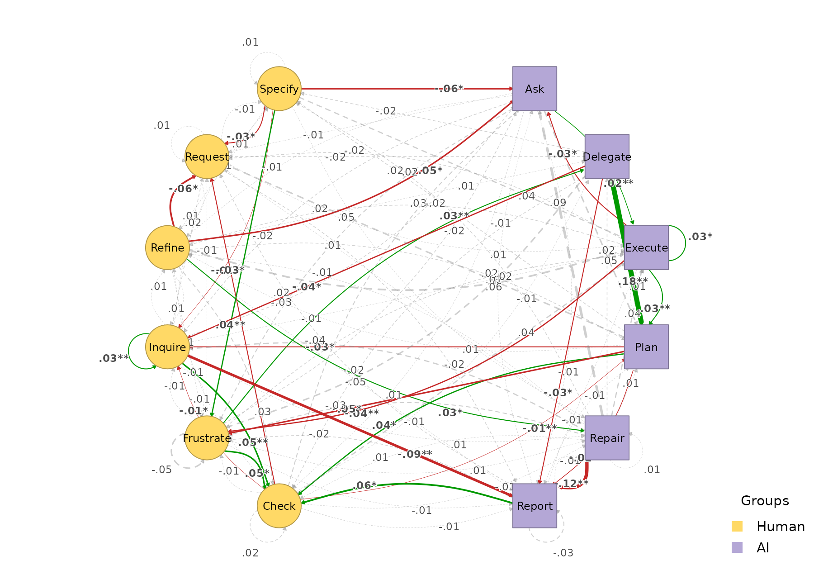
10. Path patterns
extract_meta_paths() discovers recurring patterns at two
levels. By default it returns concrete state-level patterns (alphabet =
the code set Ask, Plan, Check, …)
and annotates each row with the type-level template it instantiates:
extract_meta_paths(net, length = 3)
#> Patterns (state-level) over 429 sequences
#> Rows: 1058 | Lengths: 3 | Gaps: 0
#> schema meta_schema length gap count n_seq support
#> Request->Execute->Request Human->AI->Human 3 0 401 194 0.452
#> Execute->Request->Execute AI->Human->AI 3 0 391 180 0.420
#> Request->Specify->Ask Human->Human->AI 3 0 344 202 0.471
#> Specify->Ask->Plan Human->AI->AI 3 0 340 197 0.459
#> Ask->Plan->Request AI->AI->Human 3 0 303 197 0.459
#> Request->Specify->Execute Human->Human->AI 3 0 281 152 0.354
#> Execute->Request->Specify AI->Human->Human 3 0 249 142 0.331
#> Request->Specify->Frustrate Human->Human->Human 3 0 248 241 0.562
#> Frustrate->Ask->Plan Human->AI->AI 3 0 214 187 0.436
#> Specify->Request->Specify Human->Human->Human 3 0 198 192 0.448
#> frequency lift
#> 0.022 5.00
#> 0.021 4.65
#> 0.019 6.15
#> 0.018 11.65
#> 0.016 9.77
#> 0.015 3.73
#> 0.013 3.30
#> 0.013 5.86
#> 0.012 11.71
#> 0.011 2.93
#> ... (1048 more)A schema filters the search. Each part can be a type
name (expands to every code in that group), a concrete state, or
*:
extract_meta_paths(net, schema = "Human->AI->Human")
#> State-level instances of schema 'Human->AI->Human' over 429 sequences
#> Rows: 163 | Lengths: 3 | Gaps: 0
#> schema meta_schema length gap count n_seq support
#> Request->Execute->Request Human->AI->Human 3 0 401 194 0.452
#> Specify->Execute->Request Human->AI->Human 3 0 176 107 0.249
#> Request->Ask->Request Human->AI->Human 3 0 130 91 0.212
#> Check->Execute->Request Human->AI->Human 3 0 123 96 0.224
#> Specify->Ask->Request Human->AI->Human 3 0 120 84 0.196
#> Specify->Execute->Frustrate Human->AI->Human 3 0 114 88 0.205
#> Request->Execute->Frustrate Human->AI->Human 3 0 106 88 0.205
#> Request->Execute->Inquire Human->AI->Human 3 0 97 76 0.177
#> Specify->Ask->Frustrate Human->AI->Human 3 0 86 70 0.163
#> Inquire->Execute->Request Human->AI->Human 3 0 73 52 0.121
#> frequency lift
#> 0.112 5.00
#> 0.049 2.33
#> 0.036 2.19
#> 0.034 3.67
#> 0.033 2.15
#> 0.032 2.57
#> 0.030 2.24
#> 0.027 4.40
#> 0.024 2.61
#> 0.020 3.31
#> ... (153 more)
extract_meta_paths(net, schema = "Human->Ask->*")
#> State-level instances of schema 'Human->Ask->*' over 429 sequences
#> Rows: 63 | Lengths: 3 | Gaps: 0
#> schema meta_schema length gap count n_seq support
#> Specify->Ask->Plan Human->AI->AI 3 0 340 197 0.459
#> Frustrate->Ask->Plan Human->AI->AI 3 0 214 187 0.436
#> Request->Ask->Plan Human->AI->AI 3 0 139 106 0.247
#> Request->Ask->Request Human->AI->Human 3 0 130 91 0.212
#> Specify->Ask->Request Human->AI->Human 3 0 120 84 0.196
#> Specify->Ask->Frustrate Human->AI->Human 3 0 86 70 0.163
#> Inquire->Ask->Plan Human->AI->AI 3 0 53 45 0.105
#> Refine->Ask->Plan Human->AI->AI 3 0 52 46 0.107
#> Request->Ask->Frustrate Human->AI->Human 3 0 50 44 0.103
#> Specify->Ask->Specify Human->AI->Human 3 0 49 41 0.096
#> frequency lift
#> 0.170 11.65
#> 0.107 11.71
#> 0.070 4.48
#> 0.065 2.19
#> 0.060 2.15
#> 0.043 2.61
#> 0.027 6.22
#> 0.026 6.57
#> 0.025 1.43
#> 0.025 0.93
#> ... (53 more)Filter by lift to surface over-represented patterns (lift > 1 means more frequent than independence would predict):
extract_meta_paths(net, length = 3, min_lift = 2)
#> Patterns (state-level) over 429 sequences
#> Rows: 301 | Lengths: 3 | Gaps: 0
#> schema meta_schema length gap count n_seq support
#> Request->Execute->Request Human->AI->Human 3 0 401 194 0.452
#> Execute->Request->Execute AI->Human->AI 3 0 391 180 0.420
#> Request->Specify->Ask Human->Human->AI 3 0 344 202 0.471
#> Specify->Ask->Plan Human->AI->AI 3 0 340 197 0.459
#> Ask->Plan->Request AI->AI->Human 3 0 303 197 0.459
#> Request->Specify->Execute Human->Human->AI 3 0 281 152 0.354
#> Execute->Request->Specify AI->Human->Human 3 0 249 142 0.331
#> Request->Specify->Frustrate Human->Human->Human 3 0 248 241 0.562
#> Frustrate->Ask->Plan Human->AI->AI 3 0 214 187 0.436
#> Specify->Request->Specify Human->Human->Human 3 0 198 192 0.448
#> frequency lift
#> 0.022 5.00
#> 0.021 4.65
#> 0.019 6.15
#> 0.018 11.65
#> 0.016 9.77
#> 0.015 3.73
#> 0.013 3.30
#> 0.013 5.86
#> 0.012 11.71
#> 0.011 2.93
#> ... (291 more)
extract_meta_paths(net, level = "type", length = 3, min_lift = 1.2)
#> Meta-paths (type-level) over 429 sequences
#> Rows: 3 | Lengths: 3 | Gaps: 0
#> schema length gap count n_seq support frequency lift
#> Human->AI->Human 3 0 3593 402 0.937 0.194 1.41
#> Human->Human->AI 3 0 3172 422 0.984 0.172 1.25
#> AI->Human->AI 3 0 2744 383 0.893 0.148 1.36